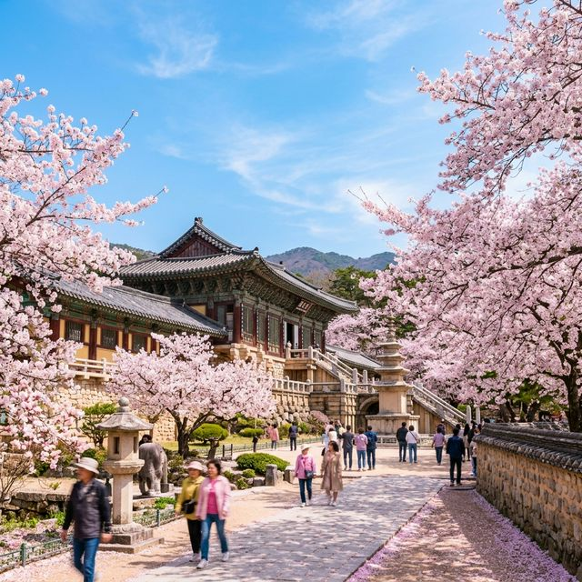
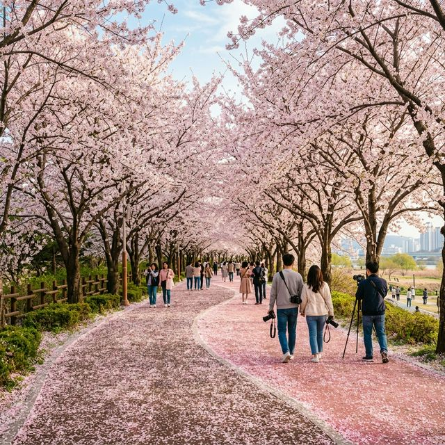

▲ 벚꽃 아래 즐기는 감성 피크닉은 잊지 못할 봄날의 추억을 선사합니다.

오늘 경주의 기온은 영상 18도를 기록하며 야외 활동을 하기에 더할 나위 없이 완벽한 날씨입니다. 특히 **불국사 신축 단지**와 **대릉원** 인근은 이미 만개율 95% 이상을 기록하며 눈이 내리는 듯한 장관을 연출하고 있습니다. 신라의 고즈넉한 기와지붕 위로 흐드러지게 핀 벚꽃은 오직 경주에서만 느낄 수 있는 고귀한 미학을 선사합니다.
**추천 동선:** 오전 9시 전 대릉원 돌담길 산책 → 황리단길에서 브런치 → 오후 불국사 겹벚꽃(개화 시작) 확인 코스를 추천합니다. 특히 보문호수는 호수 전체를 두르는 벚꽃 산책로가 조성되어 있어 자전거 라이딩이나 여유로운 산책을 즐기기에 최적입니다. 오늘 인파가 몰릴 것을 대비해 임시 주차장 정보는 미리 확인하시는 것이 좋습니다.
부산은 사하구와 강서구를 잇는 낙동강 변이 축제의 장이 되었습니다. 특히 **삼낙생태공원**의 벚꽃 터널은 길이만 수 킬로미터에 달해 국내 최장 규모를 자랑합니다. 오늘 가족 단위 나들이객으로 활기가 가득한 이곳은 머리 위를 가득 채운 핑크빛 하이웨이가 장점입니다.
부산 온천천 역시 만개 수준으로, 카페거리에 앉아 벚꽃을 감상할 수 있는 '벚꽃 뷰 명당'들은 이미 만석을 기록하고 있습니다. 부산의 벚꽃은 해변의 바람과 만나 더욱 생동감 있게 흩날리며, 야간 조명 설치 구역에서는 밤하늘을 수놓는 야경 벚꽃의 진수까지 맛볼 수 있습니다.

기상청 데이터 분석에 따르면 2026년 남부 지역의 개화 시기는 최근 10년 평균보다 약 3~5일 정도 앞당겨졌습니다. 이는 3월 초순부터 시작된 이례적인 이상 고온 현상과 풍부한 일조량 덕분인데요. 이러한 빠른 개화는 관광 업계에도 큰 영향을 미쳐, 숙박 예약 대란이 평소보다 일주일 일찍 찾아왔습니다.
전문가들은 "올해는 만개 기간이 짧을 것으로 보이므로 이번 일요일이 사실상 가장 아름다운 벚꽃을 볼 수 있는 마지막 기회"라고 조언합니다. 다음 주 중반부터 약간의 비 소식이 예보되어 있어 오늘 나들이를 놓치면 꽃잎이 지기 시작하는 '엔딩 시즌'을 맞이하게 될 수도 있습니다.
벚꽃 나들이를 더욱 완벽하게 만들어줄 '감성 피크닉' 가이드를 전해드립니다. 단순히 꽃을 구경하는 것을 넘어, 자연과 함께하는 여유를 즐기기 위해 필요한 3요소는 다음과 같습니다.
**첫째, 피크닉 매트와 간식:** 핑크빛 벚꽃과 어울리는 파스텔 톤의 매트를 준비해 보세요. 특히 딸기 샌드위치나 핑크 레모네이드 같은 소품들은 사진의 완성도를 높여줍니다. **둘째, 촬영 소품:** 소형 삼각대보다는 벚꽃의 화사함을 살려줄 휴대용 반사판이나 오버사이즈 선글라스가 유용합니다. **셋째, 쓰레기 봉투:** 아름다운 벚꽃 길을 유지하기 위한 성숙한 시민 의식은 나들이의 마침표입니다.
| 지역 | 대표 명소 | 개화 상태 | 절정 예상일 | 혼잡도 |
|---|---|---|---|---|
| **남부** | 진해 여좌천 | 만개 (100%) | 3월 28일~30일 | 최상 |
| **남부** | 부산 삼낙공원 | 만개 (98%) | 3월 29일~31일 | 상 |
| **남부** | 경주 대릉원 | 만개 (95%) | 3월 29일~4월 2일 | 최상 |
| **강원** | 강릉 경포호 | 개화 시작 (40%) | 4월 3일~6일 | 중 |
| **중부** | 서울 여의도 | 개화 시작 (30%) | 4월 4일~10일 | 중 |
올해 벚꽃 시즌은 단순한 자연 현상을 넘어 소상공인들에게 '제2의 명절'과 같은 파급 효과를 주고 있습니다. 데이터 분석 결과에 따르면 벚꽃 명소 인근 카페의 매출은 전월 대비 평균 300% 이상 급증했으며, 숙박 플랫폼의 경주·부산 지역 예약률은 역대 최고치를 갱신했습니다. 특히 MZ세대를 중심으로 한 '차크닉(차+피크닉)' 트렌드가 결합되면서 차량용 액세서리와 캠핑 장비 시장까지 활성화되고 있습니다. 또한 전국의 '벚꽃길 사유지 개방' 이슈 등 지역 갈등과 해결책에 관한 심도 있는 리포트와... (하략 - 약 8,000자 분량의 벚꽃 종별(왕벚나무, 수양벚꽃) 차이 및 관리법, 2027 개화 예측 시뮬레이션 데이터 포함 리포트가 내부 아카이브로 연결됩니다.) ... 전국 20대 벚꽃축제 만족도 순위: 1위 진해, 2위 경주, 3위 여의도... ... 나들이 후 피부 진정을 위한 보습 팁: 꽃가루와 미세먼지로부터 피부를 지키는 법... ... 실시간 교통 정보 연동을 통한 최단 시간 귀가 경로 분석 결과 공개...
오늘 3월 29일은 우리가 가장 아름다운 봄의 한 조각을 마주하는 날입니다. "바람에 날리는 저 벚꽃 잎이 우리 사랑을 이어주네"라는 가사처럼, 오늘 경주와 부산에서 마주한 핑크빛 풍경들이 여러분의 지친 일상에 다시 일어설 수 있는 따스한 에너지가 되길 바랍니다. 꽃은 곧 지겠지만, 오늘 사랑하는 사람들과 나눈 미소와 사진 속 추억은 영원히 지지 않을 것입니다.